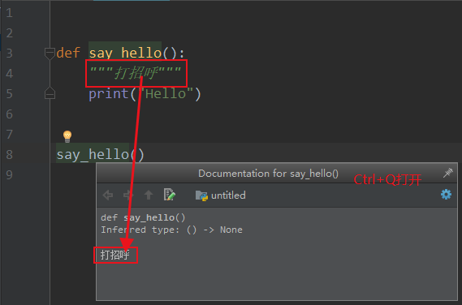
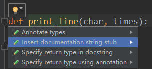
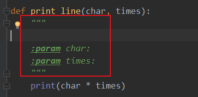
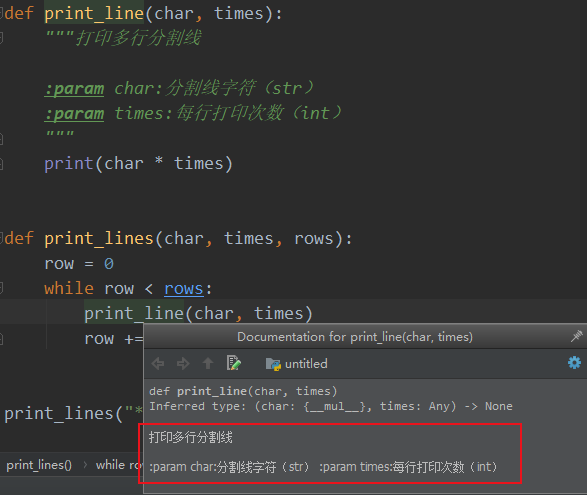

def 函数名():
函数封装的代码
……
注：函数前后应该保留两个空行
直接使用函数名()调用函数块。
1 def say_hello():
2 print("Hello")
3
4
5 say_hello()注：调用函数不能出现在定义函数前。
因为是解释行语言，解释器还不知道定义了这个函数。
NameError: name 'say_hello' is not defined
在函数名后面的小括号内部填写 参数
def 函数名(参数1, 参数2, 参数3，……):
函数封装的代码
……
1 def sum_2_num(num1, num2):
2 """两数求和"""
3 print(num1 + num2)
4
5
6 sum_2_num(333, 555)
- 形参：定义函数是，小括号中的参数，是用来不接受参数用的，在函数内部作为变量使用
- 实参：调用函数时，小括号中的参数，是用来吧数据传递到函数内部用的
注：上面的代码中：num1,num2是形参；333，555是实参
在函数中使用return关键字返回结果
1 def sum_2_num(num1, num2):
2 """两数求和"""
3 return num1 + num2
4
5
6 sum1 = sum_2_num(333, 555)
7 print(sum1)
注：return作为函数的结束，其后代码无效。
1 def print_line(char, times):
2
3 print(char * times)
4
5
6 def print_lines(char, times, rows):
7 row = 0
8 while row < rows:
9 print_line(char, times)
10 row += 1
11
12
13 print_lines("*", 20, 5)
实现可定义行数，打印字符，打印字符次数功能，控制台输出：
********************
********************
********************
********************
********************
1.在函数定义的下方使用三个引号对函数进行注释
在PyCharm中，光标放在调用函数上，使用 Ctrl + Q 快捷键打开Documentation窗口，查看函数的注释。

2.自动增加描述

将光标放在需要注释的函数名字上，左上角会出现小灯泡，点击小灯泡，鼠标选中第二个。
IDE自动添加如下注释，修改注释即可。

使用Ctrl+Q查看文档注释：
